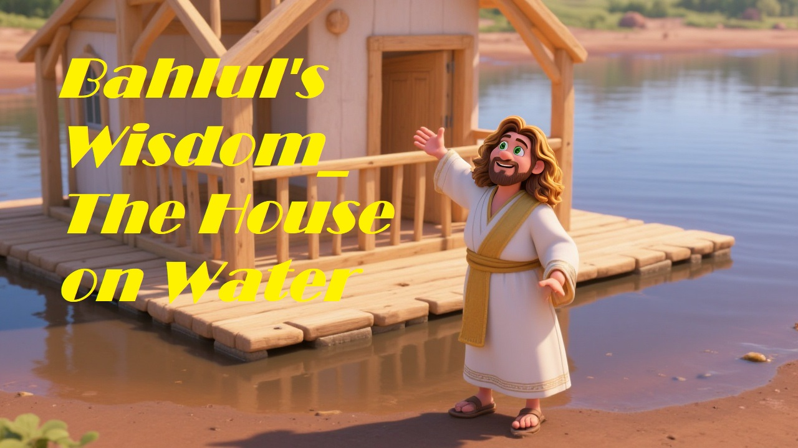

One day, Bahlul announced that he had built a marvelous house—right on the water! Everyone was puzzled and curious. They went to see this incredible house.
When they arrived, they found Bahlul sitting in a small boat floating calmly on the lake.
“Where is your house, Bahlul?” someone asked.
Bahlul smiled and replied, “Here it is. The house on water.”
The people laughed and said, “This is just a boat!”
Bahlul responded, “Exactly! Life is like this boat. If you try to hold onto things too tightly or build your happiness on unstable foundations, you’ll sink. But if you learn to stay afloat and move with the flow, you can find peace and wisdom anywhere.”
Moral: True wisdom is knowing how to stay steady even when life feels uncertain.
← Back to stories